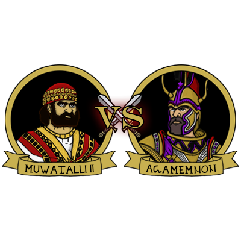

Orbis History Maps
The First Empire: Sumer & Akkad

Title: "Sumer and Akkad Map"
Timeline: 2900 – 2004 BCE
Epoque: Bronze Age
Format: A2 (420 x 594 mm)
Resolution: 7016 x 4961 pixels 300 dpi
Short History
The Sumerians, an ancient Mesopotamian people, are known for establishing one of the earliest and most influential civilizations in the world. Originating in southern Mesopotamia, now modern-day Iraq, they achieved notable advancements including the creation of the first writing system (cuneiform), the invention of the wheel, and the establishment of complex city-states. The Sumerian civilization arose around 4,100 BCE, originating from the Ubaid culture in the southern region of the Fertile Crescent, where the Tigris and Euphrates rivers converge. The Akkadians, who were the first speakers of a Semitic language in Mesopotamia, are recognized as the creators of the world's first empire. They initially settled in the northern region of Mesopotamia, specifically in Akkad, and excelled in farming and herding, eventually gaining control of the area. The city of Agade, founded around 2334 BCE by Sargon of Akkad, played a crucial role in the establishment of the Akkadian Empire and became its capital. Sargon, a skilled military leader and administrator, swiftly conquered all the city-states of Sumer and Akkad, solidifying his empire.
Founder
Gods
An
Inanna
Utu
Enlil
Enki
Rivals
Gutian Tribes
Amorite Tribes
Elam Kingdom
The Egyptian & Kushite Kingdoms
Title: "Ancient Egypt and Kush Kingdoms"
Timeline: 3150 – 677 BCE
Epoque: Bronze Age
Format: A3 (420 x 297 mm)
Resolution: 7016 x 4961 pixels 300 dpi
Short History
Ancient Egypt was one of the longest-lasting civilizations in history, spanning over 3000 years. It began in around 3150 BC with the unification of Upper and Lower Egypt under the first pharaoh, Narmer. The civilization's history can be divided into stable kingdoms separated by periods of relative instability known as Intermediate Periods. The Old Kingdom, which occurred during the Early Bronze Age, was a time of great cultural and artistic achievement during which the Egyptians developed a complex writing system known as hieroglyphs. The Middle Kingdom, which followed the First Intermediate Period, was a time of political and economic stability during which the pharaohs reunited and expanded Egypt's territory. The New Kingdom, which occurred during the Late Bronze Age, was the most powerful and prosperous period in ancient Egyptian history. The pharaohs of the New Kingdom conquered a vast empire and expanded Egypt's trade routes throughout the Mediterranean world. The Kingdom of Kush, a powerful ancient civilization, emerged in what is now Sudan. Its history is deeply intertwined with the Nile River and its proximity to Egypt. The Kushites were skilled in agriculture, trade, and warfare. They developed their own distinct culture, incorporating elements from Egyptian and sub-Saharan African traditions. Over time, Kush would experience periods of both independence and subjugation to Egypt. But its resilience and adaptability ensured its survival as a major power in the region.
Founder
Gods
Ra
Isis
Amun
Horus
Osiris
Rivals
Hittite Empire
Babylonian Empire
Assyrian Empire
Philistia Confederation
Libyan Tribes
The Hittite Empire vs Achaens Alliance
Title: "Clash of Worlds: Hittites vs Achaens"
Timeline: 1350 – 1228 BCE
Epoque: Bronze Age
Format: A3 (297 x 420 mm)
Resolution: 4961 x 7016 pixels 300 dpi
Short History
The Hittites, an Indo-European people, rose to prominence in Anatolia (modern-day Turkey) around the 16th century BCE. Their capital, Hattusa, was a strategically situated fortress city. Initially a small kingdom, the Hittites gradually expanded their territory through a combination of conquest and diplomacy. By the 14th century BCE, under powerful kings like Suppiluliuma I, the Hittite Empire reached its peak. They were formidable warriors and pioneers in ironworking technology, which provided them a significant military edge. The Hittites also engaged in diplomatic relations with other major powers of the era, notably Egypt. A landmark in diplomatic history was the Treaty of Kadesh, negotiated between Ramses II of Egypt and Hattusili III of the Hittites. Hittite records reference a group known as the Ahhiyawa, often associated with the Achaeans. Tensions arose between these two powers, with the Hittites documenting raids and incursions by the Ahhiyawa. The Achaeans, a Greek-speaking people, were expanding their influence in the Aegean and eastern Mediterranean, leading to inevitable conflict with the Hittites.
Combatents
Gods
Teššub
Tarhun
Zeus
Apollo
Athena
Rivals
Egyptian Empire
Assyrian Empire
Sea People Confederation
Kaskian Tribes
Thracian Tribes
The Mighty Assyrian Empire

Title: "Assyrian Empire Map"
Timeline: 911 - 609 BCE
Epoque: Iron Age
Format: A2 (420 x 594 mm)
Resolution: 7016 x 4961 pixels 300 dpi
Short History
The mighty Akkadian Empire, once a blazing sun illuminating Mesopotamia, eventually flickered and faded, leaving behind a vast shadow. Yet, from the embers of its decline, a new flame flickered: Assyria. Its rise wasn't a dramatic upheaval, but a gradual ascension, fueled by resilience, adaptation, and a strategic alliance with iron, a nascent technology. The transition from bronze to iron wasn't a sudden revolution, but a gradual evolution. Hittite and Mitanni cultures in Anatolia (present-day Turkey) were among the first to experiment with ironworking, their furnaces glowing with the embers of discovery. Slowly, the secrets of this new metal spread, carried by trade routes and whispers of innovation. The Assyrians, an ambitious and adaptable civilization, eagerly embraced iron's potential. They recognized its superior strength compared to bronze and diligently honed their ironworking skills, crafting weapons and armor of unparalleled durability. The impact was immediate and brutal. Their iron-clad armies swept across the Near East, shattering bronze-wielding foes like clay against steel. From the fertile plains of Mesopotamia to the rugged coastlines of Anatolia, the Assyrians carved out an empire forged in iron and bathed in the crimson tide of conquest. Assyria's legacy extends beyond war and dominance. They made notable contributions to science, mathematics, and literature, greatly influencing the intellectual development of the region.
Founder

Gods
Ashur
Ishtar
Nabu
Marduk
Sin
Rivals
Median Empire
Neo-Babylonian Empire
Lydian Empire
Cimmerian Tribes
Schytian Tribes
Aotearoa New Zeland Map
Title: "Aotearoa New Zealand Map"
Timeline: 1250 - 1769 AD
Epoque: Middle Ages - Age of Exploration
Format: A2 (420 x 594 mm)
Resolution: 4961 x 7016 pixels 300 dpi
Short History
The story of New Zealand, or Aotearoa as it’s known to Māori, begins with Kupe. According to Māori oral traditions, Kupe was a legendary navigator who sailed from Hawaiki (believed to be a mythical Polynesian homeland) to discover Aotearoa. His journey and subsequent exploration laid the foundation for Māori settlement, which occurred between approximately 1250 and 1300 AD. Māori society flourished, developing a complex culture, language, and spiritual connection to the land. They became skilled navigators, farmers, and fishermen, adapting to the unique environment of Aotearoa. Centuries later, European eyes turned towards the Pacific. In 1642, Dutch explorer Abel Tasman was the first European to sight New Zealand, though his encounters with Māori were hostile. It wasn’t until 1769 that Captain James Cook arrived. With a more peaceful approach, Cook charted the coastline extensively, mapping and naming many of New Zealand’s geographical features. His voyages marked the beginning of sustained European contact with Aotearoa, setting the stage for significant changes in the years to come.
Founder
Gods
Ranginui
Tāne Mahuta
Tūmatauenga
Tangaroa
Papatūānuku
Rivals
Kingdom of France
Netherlands United Provinces